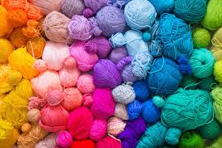

Nyx's Desk
Be Creative
The journey of a thousand miles begins with a single step. You won't know what you can do unless you try.
Crochet Materials
Some items may vary with each project while some are quite constant
Here are some items that do not vary
- Crochet Hook
- Yarn (any weight and colour depending on the project at hand)
- Stitch Marker
- Darning Needle or any normal needle
- Notepad and pen or pencil(for important measurements)
Items that vary with projects
- Tape rule or tape measure
- Glue
- Thread
- sewing machine
- stuffing(if making plushies)
- Fabric(for linning)
- Buttons